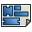

建築ワークベンチによって近代的なBIMワークフローをFreeCADで使用することができます。IFCサポート、壁や構造要素や窓といった完全にパラメトリックな建築物の構成要素、優れた2Dドキュメント制作といった機能がサポートされています。また建築ワークベンチでは製図ワークベンチの全てのツールが使用できます。
建築ワークベンチによって近代的なBIMワークフローをFreeCADで使用することができます。IFCサポート、壁や構造要素や窓といった完全にパラメトリックな建築物の構成要素、優れた2Dドキュメント制作といった機能がサポートされています。また建築ワークベンチでは製図ワークベンチの全てのツールが使用できます。

構築用ツール
建築用オブジェクトを作成するためのツールです。
- Rebar tools
-
 Straight Rebar: Creates a Straight reinforcement bar in a selected structural element
Straight Rebar: Creates a Straight reinforcement bar in a selected structural element - UShape Rebar: Creates a UShape reinforcement bar in a selected structural element
-
 LShape Rebar: Creates a LShape reinforcement bar in a selected structural element
LShape Rebar: Creates a LShape reinforcement bar in a selected structural element -
 Bent Shape Rebar: Creates a Bent Shape reinforcement bar in a selected structural element
Bent Shape Rebar: Creates a Bent Shape reinforcement bar in a selected structural element -
 Stirrup Rebar: Creates a Stirrup reinforcement bar in a selected structural element
Stirrup Rebar: Creates a Stirrup reinforcement bar in a selected structural element - Helical Rebar: Creates a Helical reinforcement bar in a selected structural element
-
 Rebar: Creates a custom reinforcement bar in a selected structural element using a sketch
Rebar: Creates a custom reinforcement bar in a selected structural element using a sketch
-
{kind=link}
{kind=link}
{kind=link}
-
 座標系: ドキュメントに座標系を追加します
座標系: ドキュメントに座標系を追加します
-
 屋根: 選択されている面から傾斜屋根を作成します
屋根: 選択されている面から傾斜屋根を作成します
- Panel tools
-
 Panel: Creates a panel object from a selected 2D object
Panel: Creates a panel object from a selected 2D object -
 Panel Cut: Creates a 2D cut view from a panel available in version 0.17
Panel Cut: Creates a 2D cut view from a panel available in version 0.17
-
-
 Panel Sheet: Creates a 2D cut sheet including panel cuts or other 2D objects available in version 0.17
Panel Sheet: Creates a 2D cut sheet including panel cuts or other 2D objects available in version 0.17
-
-  Nest: Allow to nest several flat objects inside a container shape available in version 0.17
{kind=link}
-
 Frame: Creates a frame object from a selected layout
Frame: Creates a frame object from a selected layout -
 Equipment: Creates an equipment or furniture object
Equipment: Creates an equipment or furniture object
- Pipe tools available in version 0.17
-
 Pipe: Creates a pipe available in version 0.17
Pipe: Creates a pipe available in version 0.17
-
-
 Pipe Connector: Creates a corner or tee connection between 2 or 3 selected pipes available in version 0.17
Pipe Connector: Creates a corner or tee connection between 2 or 3 selected pipes available in version 0.17
-
- Material tools
-
 Material: Creates a material and attributes it to selected objects, if any
Material: Creates a material and attributes it to selected objects, if any -
 Multi-Material: Creates a multi-material and attributes it to selected objects, if any available in version 0.17
Multi-Material: Creates a multi-material and attributes it to selected objects, if any available in version 0.17
-
-
 Schedule: Creates different types of schedules
Schedule: Creates different types of schedules
修正用ツール
These are tools for modifying architectural objects.
ユーティリティ
特定の作業を補助するための付加的なツールです。
-
 メッシュの分割: 選択されているメッシュを別々の構成要素に分割します
メッシュの分割: 選択されているメッシュを別々の構成要素に分割します -
 メッシュからシェイプへ: 同一面を統合しつつメッシュをシェイプに変換します
メッシュからシェイプへ: 同一面を統合しつつメッシュをシェイプに変換します -
 シェイプの削除: 三次元シェイプベースの建築オブジェクトを完全にパラメトリックなものに変えます
シェイプの削除: 三次元シェイプベースの建築オブジェクトを完全にパラメトリックなものに変えます -
 非ソリッドなメッシュを選択: 現在の選択オブジェクトまたはドキュメントから全ての非ソリッドなメッシュを選択します
非ソリッドなメッシュを選択: 現在の選択オブジェクトまたはドキュメントから全ての非ソリッドなメッシュを選択します -
 穴埋め: 選択されているシェイプベースオブジェクトの穴を埋めます
穴埋め: 選択されているシェイプベースオブジェクトの穴を埋めます -
 検証: 選択されているオブジェクトが欠陥を含んでいないソリッドであるかどうかをチェックします
検証: 選択されているオブジェクトが欠陥を含んでいないソリッドであるかどうかをチェックします
Preferences
-
 Preferences...: Preferences disposable in Arch Module.
Preferences...: Preferences disposable in Arch Module.
ファイル形式
API
The Arch module can be used in python scripts and macros using the Arch Python API functions.
Tutorials
- Arch tutorial
- Quick arch overview on Yorik's blog
- Video presentation of the Arch workbench
- Import from STL or OBJ
- Export to STL or OBJ
- Arch panel tutorial
- BIM modeling chapter from the FreeCAD manual